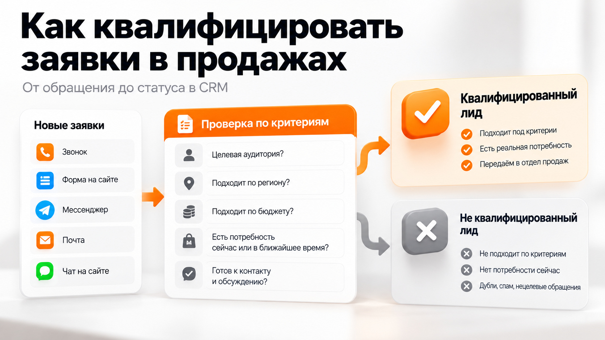
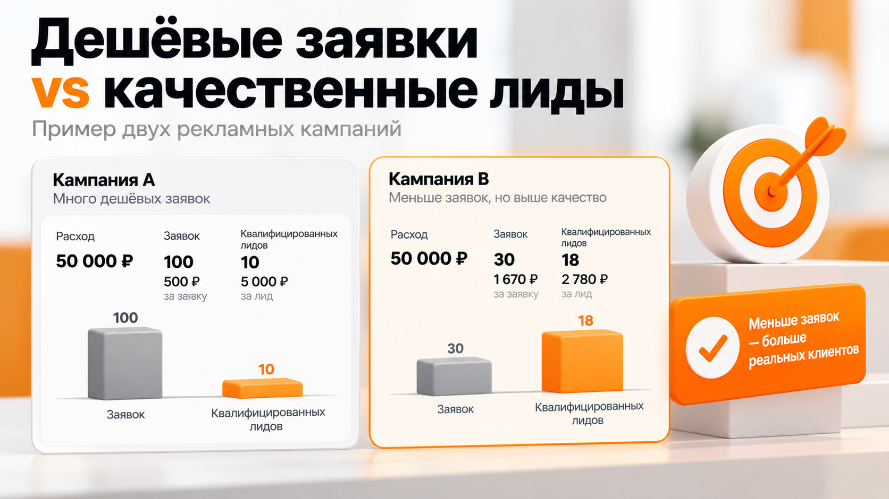

Блог о платном трафике
Квалификация лидов в продажах: как определить качество заявок и улучшить рекламу
Квалификация лидов - это проверка входящих обращений по единым критериям бизнеса. Она позволяет отделить потенциальных покупателей от заявок, которые не подходят по услуге, региону или другим существенным условиям. Для рекламы важны не только количество заявок и их цена, но и доля квалифицированных лидов, стоимость их привлечения и последующие продажи.
Коротко: менеджер проверяет обращение, фиксирует результат в CRM, маркетолог рассчитывает долю и стоимость квалифицированных заявок. Если статус удаётся связать с визитом на сайт, его можно передать в Яндекс Метрику и использовать при анализе или оптимизации рекламы в Директе.
Что такое квалифицированный лид: пример
Квалифицированный лид - это обращение человека или компании, подтвердивших потребность и соответствующих согласованным критериям продавца. Он ещё не купил товар, но у отдела продаж есть предметный повод продолжить работу.
Допустим, стоматология получает четыре заявки на имплантацию:
- Человек находится в городе клиники, интересуется имплантацией и готов записаться на консультацию.
- Заявитель ищет клинику в другом регионе, где компания не оказывает услуги.
- Человеку нужна другая стоматологическая услуга.
- В форме указан ошибочный или чужой номер телефона.
Из четырёх обращений только первое подтверждено как подходящее. В этом примере доля квалификации составляет 25%. При этом вопрос о цене сам по себе не делает заявку некачественной: сначала нужно уточнить потребность и готовность к дальнейшему разговору.
Подробно причины неподходящих обращений разобраны в статье «Некачественные лиды из Яндекс Директа».
По каким критериям квалифицировать лиды
Критерии определяют до запуска оценки, иначе один менеджер отметит заявку как качественную, а другой - как нецелевую. Для небольшого бизнеса обычно достаточно трёх-пяти проверяемых признаков:
- Потребность: человеку действительно нужна ваша услуга или товар.
- Соответствие продукту: запрос относится к тому, что компания продаёт.
- Регион и условия: клиент находится в обслуживаемой географии и подходит по существенным ограничениям.
- Бюджет или масштаб: сумма, объём закупки либо проект соответствуют минимальным условиям, если это обязательный критерий.
- Следующий шаг: есть контакт с потенциальным покупателем и возможность продолжить продажу.
Например, для строительства домов важны тип дома, регион, предполагаемый бюджет и намерение обсуждать проект. Для B2B-поставщика оборудования - нужный продукт, минимальный объём заказа и роль собеседника в закупке.
MQL и SQL: в чём разница
MQL (Marketing Qualified Lead) - лид, который маркетинг считает перспективным на основании заранее определённых сигналов интереса. SQL (Sales Qualified Lead) - лид, который проверен отделом продаж и подходит для дальнейшей работы. Это не обязательные статусы для каждого бизнеса: если в компании одна простая воронка, достаточно собственного чёткого определения «квалифицирован».
Не стоит подменять реальную проверку произвольным скорингом. Даже человек, скачавший несколько материалов с сайта, может не подходить по региону или продукту.
Какие статусы нужны в CRM
Правильная схема предполагает не последовательный переход от статуса «Квалифицирован» к статусу «Не квалифицирован», а выбор одного из статусов после проверки:
Сначала новая заявка поступает в работу, затем менеджер проверяет её по установленным критериям.
- Если лид квалифицирован, менеджер проводит консультацию или переговоры, после чего ведёт клиента к сделке и оплате.
- Если лид не квалифицирован, менеджер обязательно указывает причину: не тот регион, услуга, минимальный объём, спам, ошибочный контакт и т. д.
- Если оценить лид не удалось, менеджер фиксирует отсутствие ответа, необходимость повторного контакта или ожидание информации.
Третий статус нужен, чтобы не записывать каждого недозвонившегося человека в «некачественные». Повторные обращения одного клиента и спам также желательно учитывать отдельно, чтобы не завышать число уникальных лидов.

Минимальный набор полей в CRM: дата обращения, источник и кампания, уникальный ID лида, контакт, статус, причина неквалификации, ответственный менеджер, дата квалификации и результат сделки. Для передачи в Метрику важно сохранять идентификаторы, по которым обращение можно связать с визитом на сайт.
Как считать процент квалифицированных лидов
Основная формула:
Доля квалификации = Квалифицированные лиды / Уникальные полученные лиды × 100%.
Допустим, за месяц получено 100 уникальных лидов, из которых 40 подтвердили соответствие критериям. Доля квалификации - 40 / 100 × 100% = 40%.
Но важно заранее договориться о знаменателе:
- Доля от всех уникальных лидов показывает, какая часть входящего потока уже подтвердила качество. Пока есть необработанные заявки, показатель предварительный.
- Доля среди обработанных лидов рассчитывается как квалифицированные / (квалифицированные + не квалифицированные) × 100%. Она позволяет оценивать качество контактов без влияния заявок, по которым решения пока нет.
Например, поступило 100 обращений, из них 10 дублей, 20 уникальных заявок ещё не оценены, а из 70 обработанных 42 квалифицированы. Тогда доля от 90 уникальных обращений составляет 46,7%, а среди 70 обработанных - 60%. Называть оба показателя просто «процентом квалификации» без указания методики нельзя.
Как рассчитать стоимость квалифицированного лида
CPQL (Cost per Qualified Lead) = Расходы на рекламу / Количество квалифицированных лидов из этой рекламы.
Сравним две рекламные кампании за одинаковый период. Числа условные, для иллюстрации расчёта.
| Показатель | Кампания А | Кампания Б |
|---|---|---|
| Расход на рекламу | 50 000 ₽ | 50 000 ₽ |
| Все заявки | 100 | 30 |
| Стоимость заявки (CPL) | 500 ₽ | ≈1670 ₽ |
| Квалифицированные лиды | 10 | 18 |
| Доля квалификации | 10% | 60% |
| Стоимость квалифицированного лида (CPQL) | 5000 ₽ | ≈2780 ₽ |

По стоимости простой заявки кампания А выглядит лучше. Но кампания Б привела в 1,8 раза больше квалифицированных лидов за тот же бюджет, а каждый подтверждённый лид обошёлся дешевле. Именно поэтому CPL без данных CRM может вводить в заблуждение.
И CPQL - не финальный показатель: нужно также оценивать переходы в продажи, среднюю маржу, выручку и допустимую стоимость привлечения клиента (CAC).
Какой процент квалификации считается хорошим
Универсального норматива нет. В разных нишах и каналах доля квалифицированных заявок различается, поэтому произвольные «хорошие 70%» без экономики бизнеса мало о чём говорят.
Минимальную долю можно рассчитать от допустимой цены качественного обращения:
Минимальная доля квалификации = CPL / Допустимый CPQL × 100%.
Если обычная заявка стоит 1000 ₽, а бизнес может платить не более 2500 ₽ за квалифицированный лид, необходимо минимум 40% квалифицированных обращений. При 20% стоимость такого лида составит уже 5000 ₽.
Для правильной оценки сравнивайте одинаковые периоды, учитывайте завершённость обработки обращений и отслеживайте статистику отдельно по поиску, РСЯ и другим источникам. О подходе к оценке конверсий подробнее в статье «Какая конверсия рекламы считается хорошей».
Как передать квалифицированные лиды в Яндекс Метрику
Квалификация становится полезнее, когда сведения отдела продаж возвращаются в рекламную аналитику. Сначала заявка из Яндекс Директа поступает в CRM. Менеджер квалифицирует её, после чего данные передаются в Яндекс Метрику и используются для оптимизации рекламы в Директе.
Порядок настройки:
- Зафиксируйте ID посетителя при обращении. Для заявок с сайта сохраняйте `ClientId` Метрики в CRM, например через скрытое поле формы. Для звонков проверьте передачу идентификатора вашим коллтрекингом. В CRM-формате могут использоваться также телефон и email, но `ClientId` улучшает точность привязки.
- Создайте понятный статус в CRM. Например, «Квалифицированный лид». Результат проверки должен записываться однозначно и не зависеть от субъективной оценки разных менеджеров.
- Настройте передачу статуса в Метрику. Практические способы: готовый коннектор CRM, API Метрики или загрузка данных через Центр конверсий Директа. Для отдельного импорта офлайн-событий возможна загрузка CSV в Метрике. Формат полей зависит от выбранного способа передачи.
- Создайте и сопоставьте цель. В CRM-сценарии можно создать цель с типом «Целевое событие» и идентификатором, например `good_lead`, затем передавать такой статус сделки с её идентификатором. В статистике появится отдельная цель подтверждённого лида.
- Проверьте связь с визитами и рекламой. Важен не просто факт загрузки записей из CRM, а успешная привязка к визитам. Без неё событие не будет полноценным сигналом для оптимизации рекламы.
Яндекс рекомендует своевременно передавать CRM-данные: первоначальная привязка заказов и офлайн-конверсий к визитам ограничена периодом 21 день. При больших задержках часть обращений не свяжется с рекламным источником. Учитывайте также, что уже привязанные CRM-заказы можно обновлять позднее по отдельным правилам.
Официальные инструкции: загрузка данных из CRM в Метрику, офлайн-конверсии в Директе, передача офлайн-конверсий.
Как использовать квалификацию для оптимизации Яндекс Директа
Если Директ получает только цель «Отправка формы», стратегия ориентируется на все такие отправки, независимо от качества. Цель «Квалифицированный лид» добавляет сигнал о том, какие обращения действительно подходят бизнесу. Это не гарантирует автоматического улучшения результатов, но помогает оптимизировать рекламу ближе к реальному результату продаж.
Когда выбирать квалифицированный лид как цель стратегии: статус регулярно передаётся без ошибок, конверсии привязываются к визитам и за неделю набирается достаточно событий. Яндекс рекомендует обеспечивать регулярный объём конверсий; при малом числе целевых действий обучение может быть нестабильным. Практический ориентир - более 10 достижений выбранной цели за неделю, но это не универсальный жёсткий порог и не гарантия результата.
Если квалифицированных обращений только 2-3 в неделю, полезнее сначала собирать по ним отчётность и анализировать качество. Для автоматической стратегии на время может потребоваться более частая, но достаточно близкая к продаже цель, например подтверждённое обращение или запись. Не следует подменять статус квалификации обычными посещениями страниц.
Посмотрите результаты хотя бы за несколько полных недель с учётом задержки квалификации. Кроме CPQL, оценивайте долю последующих продаж. Подробнее о выборе стратегии: «Какую стратегию выбрать в Яндекс Директ».
Почему падает доля квалифицированных заявок
| Что показывает CRM | Что проверить в первую очередь |
|---|---|
| Много запросов на другую услугу | Поисковые запросы, объявления, ассортимент на посадочной странице |
| Не подходит регион | Геотаргетинг, условия доставки и обслуживания на сайте |
| Недостаточный бюджет | Обещания в объявлениях, ценовые ориентиры, условия покупки |
| Дубли и спам | Формы, антиспам, корректность учёта уникальных лидов |
| Много «не дозвонились» | Скорость обработки, график звонков, повторные контакты; не смешивать с нецелевыми |
| Подходят по критериям, но не покупают | Цена, продукт, предложение, отдел продаж и причины проигрыша сделок |
Не нужно исправлять каждое падение качества изменением ставок: иногда причина в работе сайта, несоответствии ожиданий клиента или пропущенных звонках. Полезно отдельно анализировать долю квалифицированных лидов по рекламной кампании, типу площадки, региону и посадочной странице.
Частые вопросы
Кто должен квалифицировать лиды?
Обычно менеджер продаж после контакта с заявителем. Маркетолог и руководитель заранее утверждают критерии, а результат фиксируется в CRM.
Если человек только узнаёт цену, он нецелевой?
Нет. Интерес к стоимости может быть первым этапом реальной покупки. Неквалифицированным его можно признать только после проверки существенных критериев.
Чем квалифицированный лид отличается от продажи?
Лид соответствует условиям и готов обсуждать покупку, но ещё не оплатил. Сделка и оплата - последующие этапы воронки.
Нужно ли считать недозвоны некачественными лидами?
Нет, пока причина не установлена. Выделите для них отдельный статус «Не удалось оценить», чтобы не искажать процент квалификации.
Какой показатель важнее: CPL или CPQL?
Для оценки качества привлечения CPQL обычно информативнее, потому что учитывает проверенные лиды. Для итогового решения важны ещё стоимость клиента, продажи и маржинальность.
Вывод
Квалификация лидов превращает субъективное «хорошие или плохие заявки» в измеримую статистику. Определите критерии, фиксируйте причины отказа в CRM, считайте долю и стоимость подтверждённых обращений. Когда данные корректно связаны с визитами, используйте их в Метрике и Директе для оценки рекламных кампаний по качеству, а не только по количеству заполненных форм.
Подробнее о связи рекламы и продаж - в статье «Сквозная аналитика Яндекс Директ».